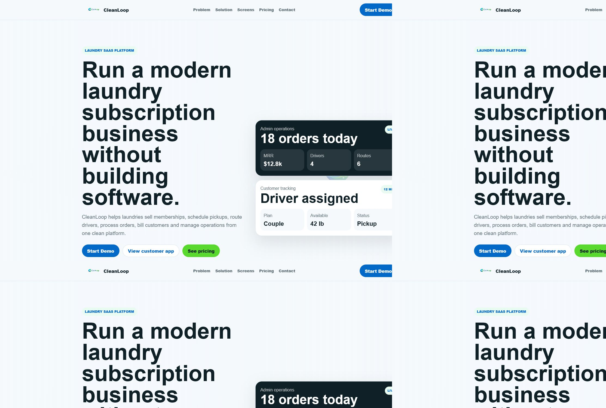

YC Systems / Projects
Built demo ecosystem
CleanLoop
A laundry SaaS platform for memberships, pickup and delivery, driver workflows, customer applications, and multi-tenant admin control.Una plataforma SaaS para lavanderías con membresías, recogida y entrega, conductores, clientes y administración multiempresa.
